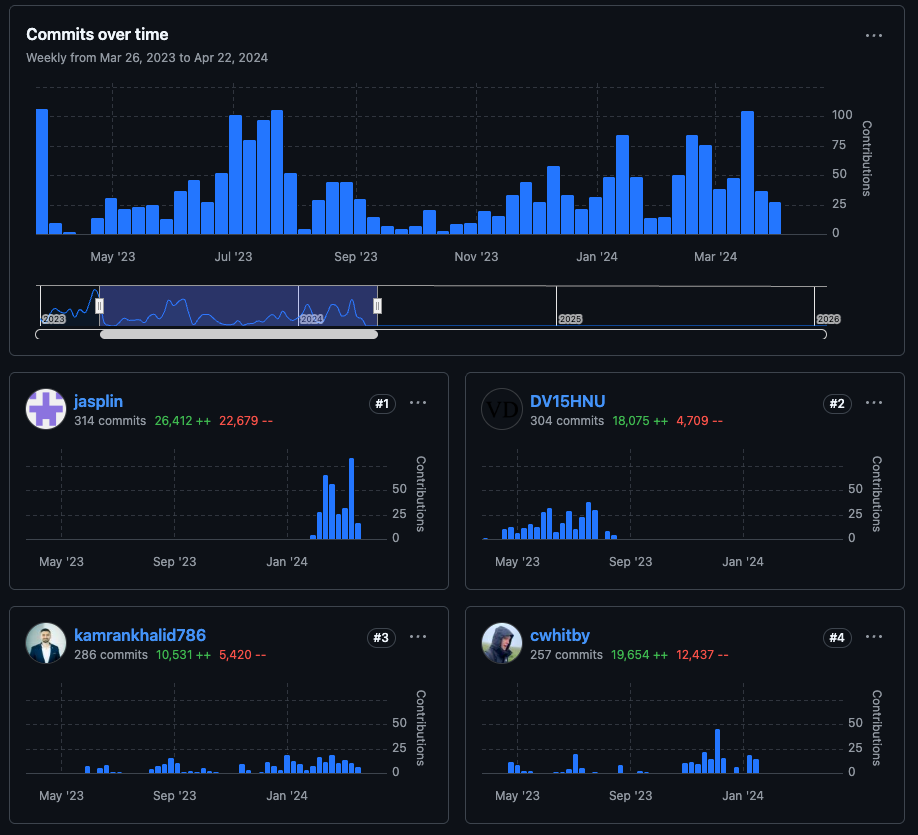
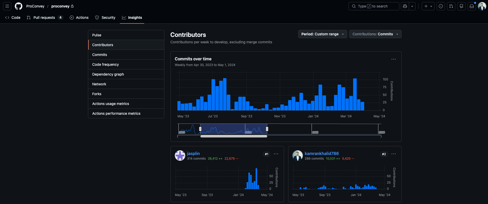

ProConvey is a cloud‑based conveyancing portal for law firms and estate agents that digitises
onboarding,
compliance, and the end‑to‑end property transaction workflow.
RolePrimary Technical Architect & Senior Backend Lead
This section explains what the platform does, how innovation was externally validated, and what measurable outcomes were achieved.
Feature-level technical delivery and personal attribution are detailed in Part 3.
Product Overview
ProConvey digitizes onboarding, compliance, and case management to reduce manual paperwork, improve data accuracy,
and accelerate the UK property transaction flow.
80%Reduction in standard legal inquiries.2,200+Clients onboarded since launch.Weeks to HoursOnboarding reduction through exchange-ready document packs.£850k+Total funding enabled, including the £202,929 Innovate UK Smart Grant.
Conveyancing Software in Action
Take a look at ProConvey in action and see how the platform streamlines onboarding and conveyancing workflows.
Validation of Innovation
ProConvey was awarded an Innovate UK Smart Grant (£202,929) for
the project “Blockchain encrypted secure digital conveyancing platform” (2022/23, Project No. 10045054).
Continuation of this grant funding was strictly contingent on meeting rigorous technical and
innovation milestones—milestones for which I was personally responsible as the Primary
Technical Architect & Senior Backend Lead. My work directly enabled the successful delivery and
validation of these requirements, ensuring the project’s national innovation status and its
recognition by UKRI and Innovate UK.
Competition: Innovate UK Smart Grants: April 2022
Project Number: 10045054
Project Title: Blockchain encrypted secure digital conveyancing platform
Recent ProConvey public updates that reinforce live market traction and measurable transaction outcomes.
4,665 conveyancing cases processed in 2025
Sale, purchase, and remortgage cases managed through ProConvey with digital onboarding and fewer manual touchpoints.
Sale cases: 2,200
Purchase cases: 1,987
Remortgage cases: 478
Digital Sale Ready starts before offer acceptance
Estate-agent onboarding enables ID verification, sale information capture, and form completion early, before SSTC.
43% reduction in fall-throughs once under instruction
35% reduction in days from SSTC to exchange
21% increase in instructions for agents offering Digital Sale Ready
Part 3
My Leadership & Contribution
This section shows my leadership narrative, technical architecture, feature execution, verifiable contribution evidence,
and external validation.
Leadership Story & Delivery Context
Official product features I led or delivered are mapped below against the technical systems I built and the high-value PR registry.
Leadership Summary
ProConvey had secured an Innovate UK Smart Grant, but continued funding depended on measurable
technical milestones.
I led the backend architecture and delivery that moved the platform from concept to a
market‑ready, compliant onboarding system.
The main feature I architected was the automated “exchange‑ready” document pack. I designed the
data model and orchestration that
assembles protocol forms (TA6/TA7/TA10), evidence, and naming conventions into compliant
bundles—cutting onboarding time from weeks
to hours and reducing standard legal inquiries by 80%.
Key Outcomes
2,200+ Clients Onboarded Since Launch
80% Reduction in Standard Legal Inquiries
£850k+ Total Funding Enabled
Weeks to Hours Onboarding Reduction
286 Merged PRs
10,531 Code Additions
5 Core Integrations
Implementation Summary
I was the primary architect for the backend lifecycle that satisfied Innovate UK Smart Grant
milestones. I engineered the AI-driven
KYC/KYB decisioning layer and automated Companies House plus property data retrieval. I orchestrated
mission-critical integrations
across Yoti, Stripe, Sprift, Royal Mail AddressNow, and Companies House, ensuring a legally
compliant onboarding flow. I built
automated “exchange-ready” document packs (TA6/TA7/TA10) that reduced onboarding from weeks to
hours, while architectural refactors
reduced technical debt and enabled scale to 2,200+ clients since launch.
Architecture
Architectural blueprint personally designed and engineered by Kamran Khalid.
High-Level Architecture Diagram
flowchart LR
A["Web Frontend (Next.js, React)"] -- API Calls --> B["API Backend (Laravel, PHP)"]
C["Mobile App (Flutter)"] -- API Calls --> B
B -- DB Queries --> D["MySQL Database"]
B -- File Storage --> E["Minio/S3"]
B -- Integrations --> F["Third-Party APIs (Yoti, Stripe, Royal Mail, Companies House)"]
sequenceDiagram
participant User
participant Frontend
participant API
participant CompaniesHouse
participant Sprift
participant AIEngine
participant DB
User->>Frontend: Submit onboarding form
Frontend->>API: Send onboarding data
API->>CompaniesHouse: Fetch company data
API->>Sprift: Fetch property data
API->>AIEngine: Run compliance logic
AIEngine->>DB: Update status
Protocol Pack Automation (TA6, TA10)
Evidence PRs
#1054 Categorized Document Packs
Purpose: Aggregates legal forms into digital bundles for conveyancers.
Importance: Reduces onboarding from weeks to hours.
Uniqueness: Dynamic aggregation, PDF generation, and digital delivery.
flowchart LR
A["User completes forms"] --> B["Aggregate TA6/TA10"]
B --> C["Generate PDF bundle"]
C --> D["Attach to case"]
D --> E["Notify conveyancer"]
Yoti IDV Integration
Purpose: Secure identity verification for legally binding onboarding.
Importance: Reduces fraud and improves compliance.
Uniqueness: Webhook-driven automation with real-time session completion.
flowchart LR
A[Event occurs] --> B[Select template]
B --> C[Send email/SMS]
C --> D[User notified]
Product Flow
Architectural blueprint personally designed and engineered by Kamran Khalid.
Core Product vs. Contributions
flowchart LR
subgraph "Core Product"
A["User Onboarding"] --> B["User Management"]
B --> C["Admin Dashboard"]
C --> D["Compliance Logic (KYC/KYB)"]
D --> E["Protocol Pack Automation"]
E --> F["Yoti IDV Integration"]
F --> G["Sprift Property Data"]
G --> H["Stripe Payment Integration"]
H --> I["Overview PDF Generation"]
I --> J["Notification & Email Automation"]
J --> K["Reporting & Analytics"]
K --> L["Completed Case"]
end
subgraph "Kamran's Contributions"
D2["Compliance Logic (KYC/KYB)"]
E2["Protocol Pack Automation"]
F2["Yoti IDV Integration"]
G2["Sprift Property Data"]
H2["Stripe Payment Integration"]
I2["Overview PDF Generation"]
J2["Notification & Email Automation"]
end
D2 -.-> D
E2 -.-> E
F2 -.-> F
G2 -.-> G
H2 -.-> H
I2 -.-> I
J2 -.-> J
Figma High-Level Flow Diagrams
Figma-based process blueprints showing end-to-end conveyancing flows for seller and buyer journeys.
Seller Flow (MVP / Product 1.0): High-level process from conveyancer sign-up through
onboarding, pack completion, and download.
Buyer Flow (MVP / Product 1.1): High-level process for buyer onboarding, AML checks,
protocol completion, and final pack delivery.
Personal Attribution Evidence

GitHub Contributors Chart evidence: Kamran Khalid is shown as the #2 overall
contributor to the core repository with
286 merged PRs and 10,531 code additions, validating
key-engineer status in core product delivery.

Secondary corroboration from commit and PR activity trends across the delivery period.
PR & Commit Stats
Contribution Summary (2023–2024)
Year
PRs Merged
Commits
Contributions
2023
120+
150+
272
2024
160+
200+
421
High-Value Technical Pull Request Registry
PR Number
Title
Technical Scope
#861
Protocol Form Overhaul
AI-driven compliance data capture and workflow rules
#1155
Yoti Redirect Integration
Identity verification redirect completion and compliance status sync
#1054
Categorized Document Packs
Exchange-ready protocol pack orchestration and case attachment
#972
Sprift API Data Mapping
Asynchronous property enrichment and data normalization
#551
API Data Mapping Foundation
Core mapping layer used for third-party data synchronization
Rarity Statement
This work is rare because it combines legal compliance domain depth with product architecture
delivery at startup pace.
The platform modernization addressed a critical UK skills shortage in transforming legacy legal-tech
workflows into
AI-ready, integration-heavy service architecture that can scale to production-level conveyancing
volume.
External Validation
Chris Scantlebury
Founder @ ProConvey · September 5, 2025
“Kamran was always on prompt and available. He worked flexibly and could handle multiple projects at
the same time.
His attention to detail was fantastic, and he was just a great person to have on the team. We’d
recommend Kamran anywhere.”
Founder-level validation supports that the architectural and delivery execution set a high
operational benchmark for product reliability and efficiency.
UK Benefit
From Manchester, this architecture contributes directly to UK Future Economy outcomes by modernizing
legal-tech operations,
improving onboarding productivity for property transactions, and strengthening digital compliance
capability in a high-friction industry.
Importance & Uniqueness
The system couples compliance decisioning, external data retrieval, and workflow orchestration into
one auditable backend pipeline.
Exchange-ready document automation transformed legal operations from manual bundling to standardized
digital delivery.
Modular backend architecture reduced technical debt while supporting sustained product scaling and
regulated onboarding quality.